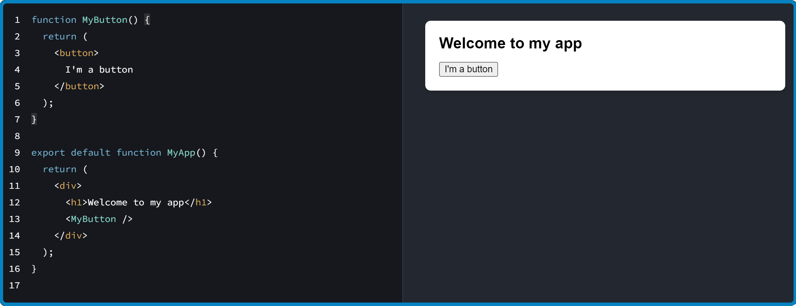
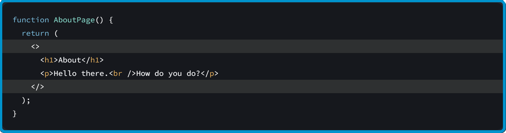
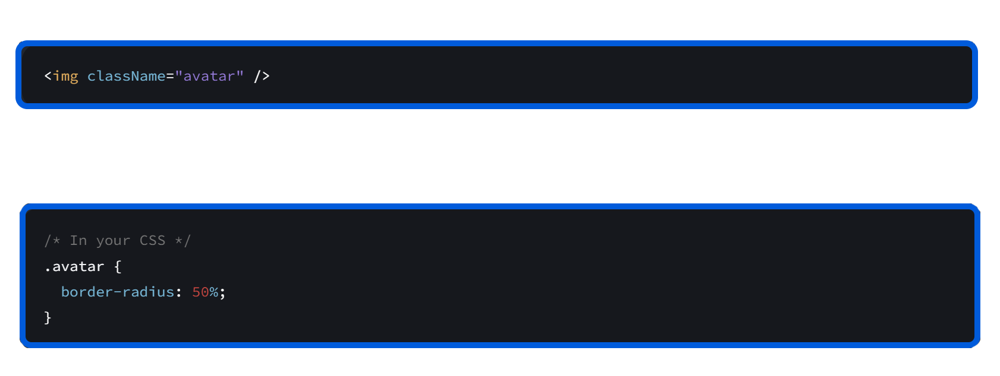
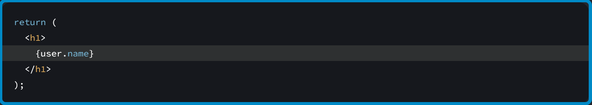
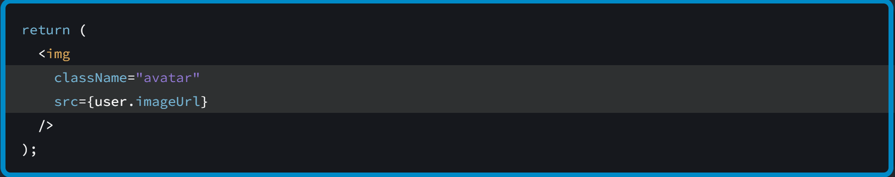
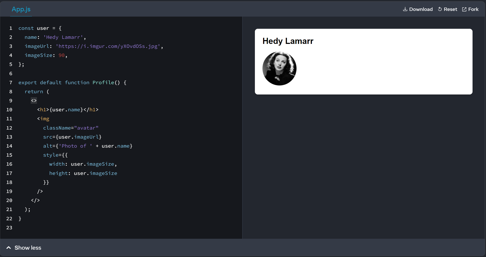

Exploring React.js
The library for creation user interfaces from components
- We will delve into brief react history
- Explore the core concepts of React.js
- Learn how to create and nest components
- How to add markup and styles
- How to display data
Introduction to React.js
- It was first released in may 2013
- Fun Fact: The audience was skeptical
- 2014 - The year of Expansion
- 2016 – React becomes mainstream
Core Concepts of React.js
Virtual DOM
- What is the Virtual DOM?
- How Does It Work?
- Benefits of the Virtual DOM?
Core Concepts of React.js
Components
- What is a React Component?
- Why do we need it?
-
The key points about components?

Core Concepts of React.js
Creating and nesting components
-
React components are JavaScript functions that return markup, you
can nest one component into another

Core Concepts of React.js
-
Class components are ES6 classes that extend
-
React.Component
-
They have a render() method that returns JSX
class Badge extends React.Component {
render() {
return Hello, my name is {this.props.name}
;
}
}
Core Concepts of React.js
JSX - JavaScript XML
a syntax extension for JavaScript that lets you write HTML-like
markup inside a JavaScript file

Core Concepts of React.js
ReactJS State vs Props
-
Props are a way to pass the data or properties from one component
to another
-
State is a built-in object in React that allows components to
manage their own data
Adding styles

Displaying data


Displaying data

Summary
-
React is a declarative JavaScript library for creating user
interfaces
- A functional component in React is a JavaScript function
- in React JSX, a syntax extension for JavaScript is used
- React is built on maximum isolation of application parts
-
Created components can be easily modified and reused in new
projects
- Virtual DOM helps achieve high application performance